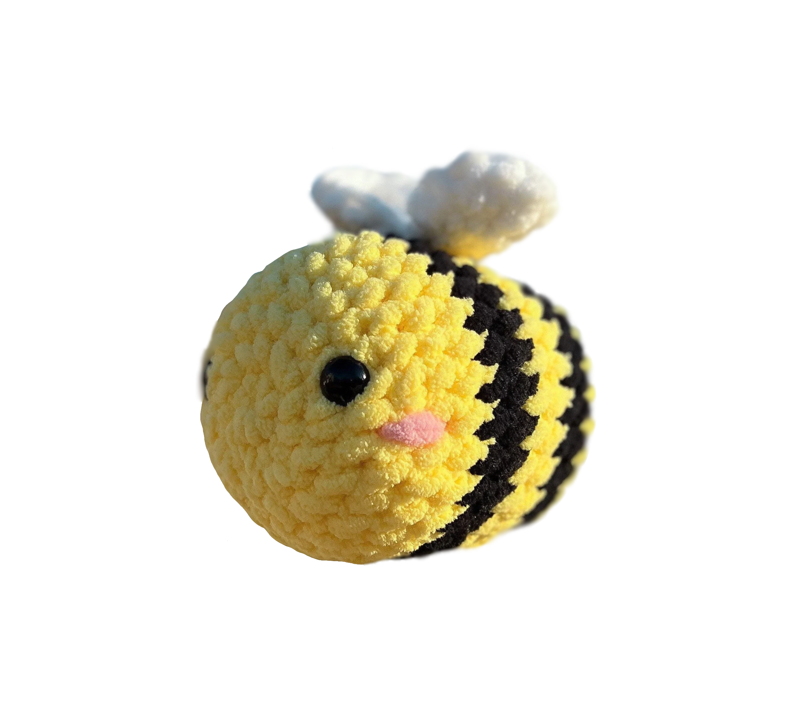

bohhhhh. tant mieux j'avais prévue le coup ;)
bon ça va être compliqué de te faire un câlin, et j'espère que tu es suffisamment proche de quelqu'un pour que cette sensation puisse passer.
en tout cas voici une petite abeille que normalement tu connais bien, je pense qu'elle ne pourra pas faire de câlin mais apparemment les doudou c'est pas mal quand on est en manque de câlin.
